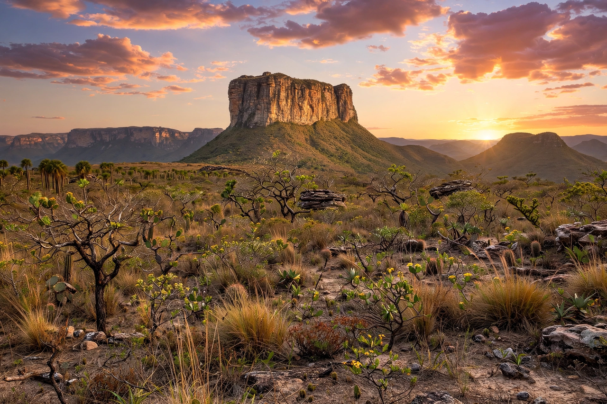

Chapada Diamantina (Portuguese for "Diamond Plateau") is a region of plateaus, table mountains, canyons, caves, and waterfalls in the centre of the Brazilian state of Bahia, some 38,000 square kilometres in extent. Its rugged highlands rise from the surrounding sertão (semi-arid backlands) to over 2,000 metres at Pico do Barbado, the highest point in northeastern Brazil. The region takes its name from the diamond rushes of the 19th century.
| Chapada Diamantina | |
|---|---|
 | |
| Country | Brazil |
| State | Bahia |
| Highest point | Pico do Barbado, 2,033 m |
| Main town | Lençóis |
| Protected area | Chapada Diamantina National Park (1985) |
The plateau is formed of ancient quartzite and sandstone formations, sculpted into flat-topped mountains (morros) such as Morro do Pai Inácio and Morro do Camelo, deep canyons like that of the Fumaça waterfall — at about 340 metres one of Brazil's highest — and extensive limestone cave systems, including Poço Encantado and Poço Azul, flooded caverns famous for shafts of sunlight turning their crystal-clear water an intense blue. Rivers stained tea-brown by organic acids run over rock slides such as the Ribeirão do Meio.
Diamonds were discovered in the region in the 1840s, triggering a rush that made towns such as Lençóis, Mucugê, Andaraí, and the now-ruined Igatu boomtowns of garimpeiros (prospectors) and powerful diamond barons (coronéis). The diamond economy collapsed as South African production flooded the market in the early 20th century. In 1985 the federal government created Chapada Diamantina National Park (about 1,520 km²) to protect the headwaters and ecosystems of the region.
Today the Chapada is one of Brazil's leading ecotourism and trekking destinations, with Lençóis as its main gateway. Popular treks include the multi-day crossing of the Vale do Pati, the climb of Morro do Pai Inácio for sunset, and visits to the Fumaça waterfall and the blue pools. The plateau's mosaic of cerrado, caatinga, and Atlantic forest vegetation supports orchids, hummingbirds, and other rich wildlife.